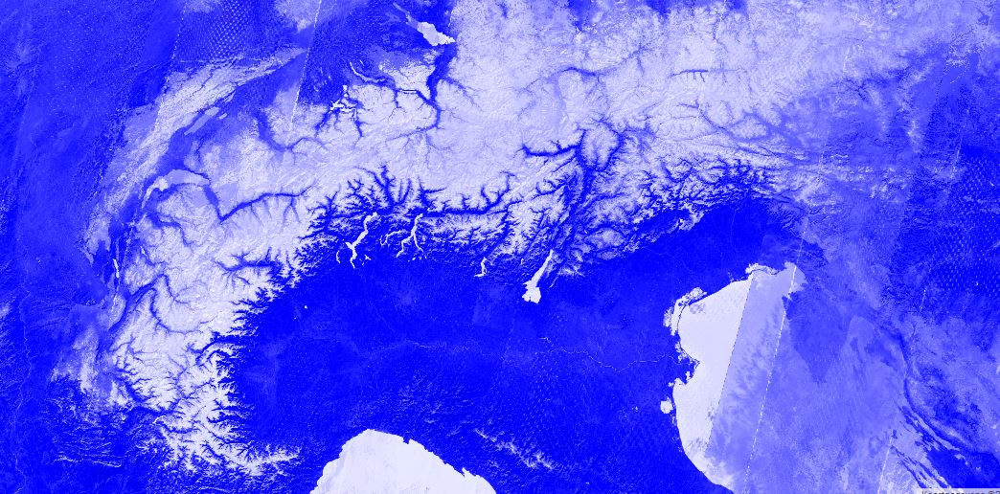

P7 Timeseries
Tijdserie analyse is een veel gebruikte operatie in Remote Sensing. Het draagt immers bij tot het modelleren van temporele (seizoenaal of lange termijn) patronen en het monitoren van landcover. Gezien het grote (historische) aanbod aan RS data is Google Earth Engine een zeer geschikt medium om tijdseries te gaan analyseren.
Tijdserieplots aanmaken in Google Earth Engine
De Normalized Difference Snow Index (NDSI)

In onderstaand voorbeeldje bekijken we de aanwezigheid van sneeuw in Joensuu, Finland doorheen de afgelopen jaren. Hiervoor maken we gebruik van alweer een nieuwe index: de Normalized Difference Snow Index (NDSI). Deze index wordt gebruikt om de aanwezigheid van sneeuw/ijs te benadrukken, ten opzichte van de andere landbekkingsklassen waaronder wolken. De NDSI maakt echter geen onderscheid tussen waterlichamen en sneeuw. (Meer info:)
De NDSI wordt berekend als:
NDSI-tijdseries
Als voordeel nemen we een punt in de Zwitsere Alpen. Zet ergens een willekeurig punt in de bergen.
Vervolgens initieren we een Sentinel-2 collectie, maar ditmaal gebruik makend van de TOA-collectie (dus niet atmosferisch gecorrigeerd). De achterliggende reden is dat deze collectie zich langer uitstrekt binnen Earth Engine, terwijl de Sentinel-2 'Surfance Reflectance' pas sinds 2019 wereldwijd systematisch wordt toegevoegd.
In volgende code wordt:
- De NDSI berekend en toegevoegd over de beeldcollectie
- De beeldcollectie wordt gefilterd op basis van de ROI.
- Het beeld met minste wolkbedekking gevisualiseerd
- De NDSI voor dit beeld gevisualiseerd.
//CloudMask + NDSI berekenen
function maskS2clouds(image) {
var qa = image.select('QA60');
var cloudBitMask = 1 << 10;
var cirrusBitMask = 1 << 11;
var mask = qa.bitwiseAnd(cloudBitMask).eq(0)
.and(qa.bitwiseAnd(cirrusBitMask).eq(0));
return image.updateMask(mask);
}
// Indicesberekenen
var addNDSI = function(image) {
var ndsi = image.normalizedDifference(['B3', 'B11']).rename('NDSI');
return image.addBands(ndsi);
};
//Satellietdata klaarzetten
var S2 = ee.ImageCollection('COPERNICUS/S2') //Gebruik van TOA, gezien groter temporele bereik
.filterBounds(ROI)
.map(maskS2clouds)
.map(addNDSI);
var visParams = {
bands: ['B4', 'B3', 'B2'],
min: 0,
max: 3000,
gamma: 1.4,
};
Map.centerObject(ROI,9);
Map.addLayer(S2.sort('CLOUDY_PIXEL_PERCENTAGE').first(), visParams);
//NDSI: geschikt voor onderscheid sneeuw, maar niet voor onderscheid met water
Map.addLayer(S2.sort('CLOUDY_PIXEL_PERCENTAGE').first().select('NDSI'),NDSI_params,'NDSI')
Vervolgens maken we een Chart aan van de NDSI, over de hele collectie:
/ Create and display a time series chart
print('Time series of NDSI at a random point in the Alpes');
var Chart = ui.Chart.image.series(S2.select('NDSI'), ROI, ee.Reducer.mean(), 100);
print(Chart.setOptions({
hAxis: {title: 'Time (-)'},
vAxis: {title: 'Index mean (-)'},
lineWidth: 2,
pointSize: 4,
interpolateNulls: true,
legend: {position: 'upper right'}
}));
Een andere visualisatiemogelijkheid is om de NDSI per jaar te plotten als 'Day of Year' (DOY):
// Create and display a DOY time series chart
print(ui.Chart.image.doySeriesByYear(S2, 'NDSI', ROI, ee.Reducer.mean(), 10).setOptions({
hAxis: {title: 'DOY (-)'},
vAxis: {title: 'NDSI (-)'},
lineWidth: 2,
pointSize: 4,
interpolateNulls: true,
legend: {position: 'upper right'}
}));
Opdracht
Visualiseer en analyseer de landdynamica op 3 locaties gebaseerd op basis van Sentinel-2 beelden:
-
Verdeel onder je break-out room volgende locaties:
- Greenland
- Amazon
- Botswana
- Portugal
- Namibia
- Indonesia
- Slovenia
-
Plot verschillende indices: NDVI, MNDWI en NDSI
- Deel de resultaten met elkaar bespreek de variatie binnen doorheen de verschillende jaren.
Oplossingen
Overige voorbeelden
-
NDWI tijdseries van het Titicaca meer (één polygoon): https://code.earthengine.google.com/c68262aa235a78f60e898099601863a1
-
Temperatuur tijdseries over verschillende punten wereldwijd: https://code.earthengine.google.com/470d63bbdc73a3800804c7dca9811ba3
Bedankt!
Bedankt aan Lisa Landuyt voor de input van deze scriptjes.